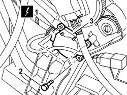

5040D85 AIR CONDITIONING LEFT AIR MIXER FLAP CONTROL MOTOR - R.R. WITH AIR CONDITIONING CASING REMOVED
- Path
- Procedures > 50 AUXILIARY UNITS > 5040 AIR CONDITIONING CASING AND COMPONENTS > 5040D AIR CONDITIONER CONTROLS > 5040D85 AIR CONDITIONING LEFT AIR MIXER FLAP CONTROL MOTOR - R.R. WITH AIR CONDITIONING CASING REMOVED
- Kind
- repair procedure (removal / refitting; the operation number is the code)
- Applies to
- all engines; all production periods
- Interactive page
- https://sloeber94.github.io/elrnDB-fUlss/en/#/179007492
Applies to: all engines; all production periods
 Removing
Removing
 Refitting
Refitting1. Disconnect the electrical connection.
2. Undo the retaining bolts.
3. Remove the motor.

Applies to: all engines; all production periods
Refitting
Removing- Position the motor.
- Tighten the retaining bolts.
- Connect the electrical connection.